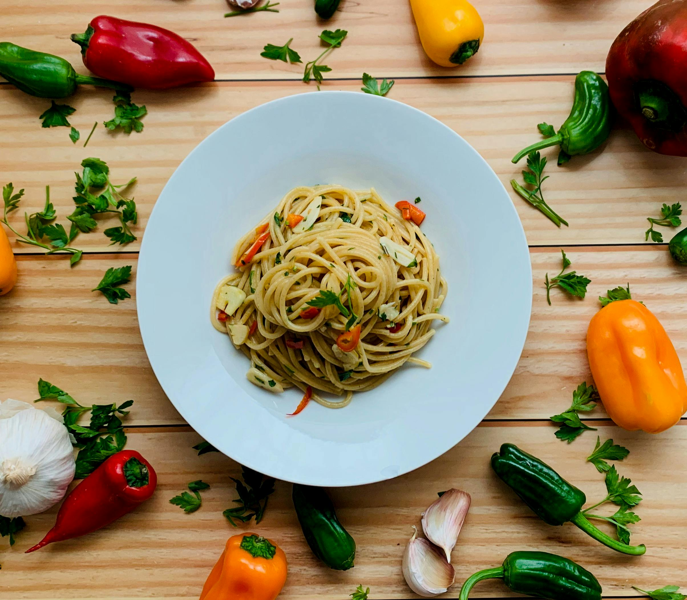

Spaghetti Aglio e Olio Recipe
Allrecipes Recipe
Spaghetti Aglio e Olio Recipe

Photo by Javier Disabato: Pexels
Description
No two aglio e olio recipes are alike, but this one is pretty true to the classic method.
The key is slowly toasting the garlic slices to a perfect golden brown in the olive oil.
If it's too light, you don't get the full flavor and if it's too dark it gets bitter.
Our Recipe
Here is our alternative recipe!
Ingredients
- 400g of spaghetti
- 4 cloves of garlic, thinly sliced
- 60ml of extra virgin olive oil
- 1 teaspoon of red pepper flakes (adjust to taste)
- Salt to taste
- Fresh parsley, chopped (for garnish)
- Grated Parmesan cheese (optional)
Preparation
- Bring a large pot of salted water to a boil. Cook the spaghetti according to package instructions until al dente.
- While the pasta is cooking, heat the olive oil in a large skillet over medium heat.
- Add the sliced garlic and red pepper flakes to the skillet. Cook until the garlic is golden brown, being careful not to burn it.
- Once the pasta is cooked, reserve 1 cup of pasta water and drain the rest.
- Add the drained spaghetti to the skillet with the garlic oil. Toss to combine, adding reserved pasta water as needed to create a sauce.
- Season with salt and garnish with chopped parsley and grated Parmesan cheese if desired.
- Serve immediately and enjoy!
Torna alla Homepage